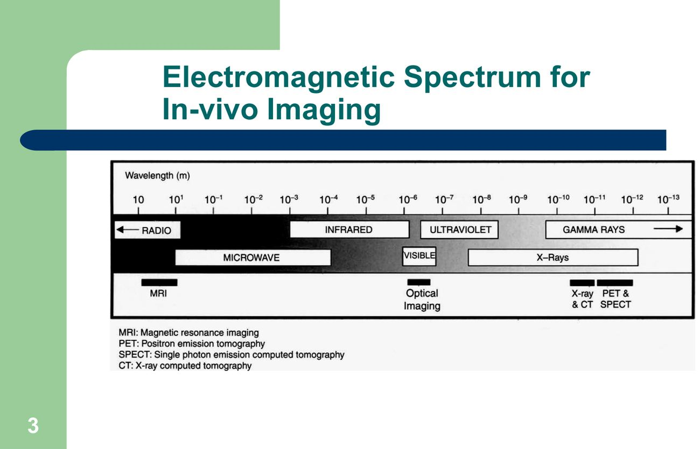
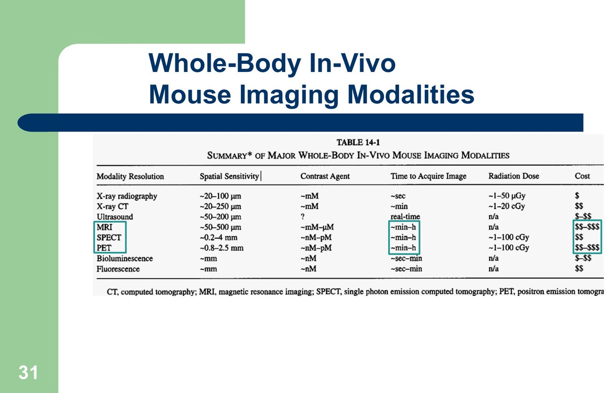
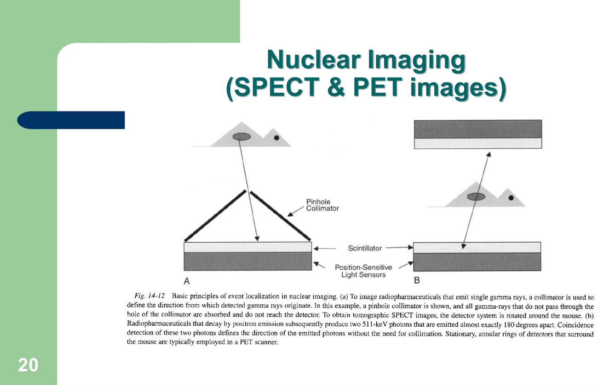
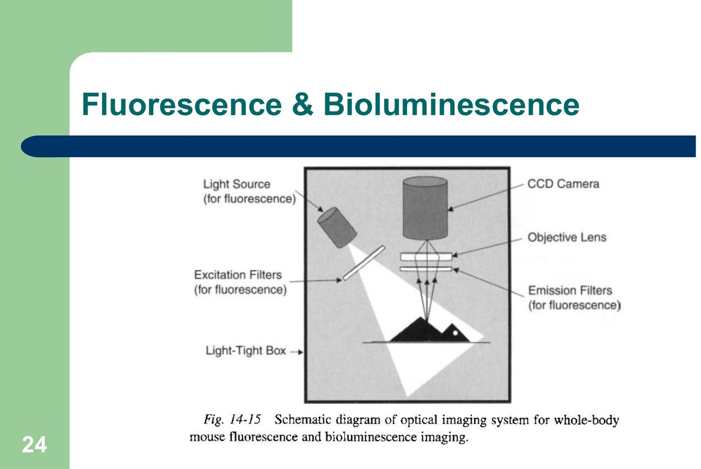

大方向與重點摘要
- 這章在講什麼
- 同樣的影像技術用在實驗動物（主要是小鼠、大鼠）時要怎麼調整：講義列出七種技術（p.2），重點是每種技術用電磁波譜的哪一段（p.3）、各自的解析度與適用情境，以及小鼠專用的設備（microCT、7 T 以上的小口徑 MRI、SPECT／PET、光學影像暗箱）。後半段講實驗動物影像中心的設計（p.32–41）。
- 為什麼重要
- 實驗動物影像同時用於實驗（研究）與診斷（p.2），可以對同一隻活體動物做長期追蹤（例如腫瘤隨時間長大，p.22、p.28），減少犧牲動物的數量。講義第一個提醒就是「Animal size!」——小鼠只有幾十公克，臨床犬貓用的設備解析度不夠，必須用專用機型。
- 這章要抓的重點
-
- 電磁波譜：MRI 用無線電波（最長波長）、光學影像用可見光、X 光與 CT 用 X 射線、PET 與 SPECT 用 γ 射線（最短波長）（p.3）——考古連考 5 題。
- X 光：組織密度與化學組成不同 → 吸收 X 光程度不同；透視攝影（fluoroscopy）看連續的內部動作（p.4–5）。
- 超音波：分辨囊性與實質腫塊、找不透 X 光的結石、導引切片與膀胱穿刺、心臟超音波、驗孕（雪貂、非人靈長類）（p.9）。
- MRI：舊稱 NMR；整隻小鼠、大鼠影像要用小口徑、強磁場機型（4.7 T、7 T、9.4 T、11.6 T）（p.13）；小鼠以 isoflurane 麻醉、監測呼吸（p.16）。
- 核醫影像：功能性／分子影像，用放射性示蹤劑；SPECT＝放出單一或多個 γ（或 X）光子＋旋轉 γ 攝影機斷層；PET＝正子衰變產生兩個相隔 180° 的光子（p.19）。
- 光學影像：小鼠全身活體影像最常用可見光；螢光（報導基因如 GFP，全身影像紅光端最適合）與生物冷光（luciferase，訊號很弱但沒有背景）（p.23–27）。
- 影像中心設計：設施、動物支援、人員、設備、資料管理五大面向；MRI 要放在射頻屏蔽室（RF-shielded room），磁場會影響心律調節器等維生裝置（p.32–40）。
- 容易混淆
- SPECT vs PET：SPECT 是單光子（一次放一個或多個 γ 光子，要靠準直器定位）；PET 是正子湮滅產生兩個方向相反（180°）的光子，靠兩邊同時偵測定位。螢光 vs 生物冷光：螢光要外部光源激發（暗箱要有光源與濾鏡），生物冷光是酵素反應自己發光（要注射受質），訊號很弱但沒有背景。CT 與 MRI 的波譜：CT 是 X 射線（游離輻射），MRI 是無線電波（非游離輻射）。
- 考試可能怎麼問
（依學長姐考古） - 學長姐說萬灼華老師的題目「跟考古一模一樣」（2022 學長姐回憶）。考古 10 題：看圖判斷是哪一種影像（生物冷光）、在電磁波譜圖上指出 CT／MRI／PET／螢光／SPECT 的位置、整隻活小鼠 MRI 需要的磁場強度（複選）、影像中心的人員（複選）、影像中心工作的是非題、MRI 要放在射頻屏蔽室的是非題。全部題目與詳解見第 10 節。
內容以老師講義為主體；講義圖片的英文圖說由整理者翻譯。標示「補充」的段落是講義以外的延伸；標示「學長姐回憶」的是考古資料夾裡的學長姐整理，非官方答案。考試範圍以老師上課為準。圖片為老師講義截圖。
講義列出的影像技術（p.2）理解
- 用途：實驗與診斷（Experimental & Diagnostic, in lab animal field）；第一個考量是動物體型（Animal size!）。
- 技術：X 光（平片與造影 plain & contrast）、透視攝影（Fluoroscopy）、X 光電腦斷層（CT，含動態造影 CT）、超音波（Ultrasonography）、磁振造影（MRI）、正子斷層造影（Positron Emission Tomography, PET）、單光子電腦斷層造影（Single Photon Emission Computed Tomography, SPECT）；後面另講光學影像（p.23）。
電磁波譜與各技術比較 Electromagnetic Spectrum & Comparison
考古最大宗：在波譜圖上指出每種影像用哪一段。記法：波長由長到短＝MRI → 光學 → X 光／CT → PET／SPECT。

波段對照必考
| 影像技術 | 電磁波 | 在 p.3 圖上的位置 | 是否游離輻射（補充） |
|---|---|---|---|
| MRI | 無線電波（radiofrequency） | 最左（波長最長） | 否 |
| 光學影像（螢光、生物冷光） | 可見光 | 中間 | 否 |
| X 光、CT | X 射線 | 偏右 | 是 |
| PET、SPECT | γ 射線 | 最右（波長最短） | 是 |
※ 超音波是機械波（聲波），不是電磁波，所以不在這張圖上（補充）。
小鼠全身活體影像技術比較（p.31）理解
| 技術 | 空間解析度 | 靈敏度（造影劑濃度） | 取像時間 | 輻射劑量 | 成本 |
|---|---|---|---|---|---|
| X 光攝影 | ~20–100 µm | ~mM | ~秒 | ~1–50 µGy | $ |
| X 光 CT | ~20–250 µm | ~mM | ~分鐘 | ~1–20 cGy | $$ |
| 超音波 | ~50–200 µm | ? | 即時 | 無 | $–$$ |
| MRI | ~50–500 µm | ~mM–µM | ~分鐘–小時 | 無 | $$–$$$ |
| SPECT | ~0.2–4 mm | ~nM–pM | ~分鐘–小時 | ~1–100 cGy | $$ |
| PET | ~0.8–2.5 mm | ~nM–pM | ~分鐘–小時 | ~1–100 cGy | $$–$$$ |
| 生物冷光 | ~mm | ~nM | ~秒–分鐘 | 無 | $–$$ |
| 螢光 | ~mm | ~nM | ~秒–分鐘 | 無 | $$ |

解析度 vs 靈敏度是取捨：X 光、CT、MRI 解析度好（幾十到幾百 µm），但要很高濃度的造影劑（mM）；SPECT、PET 解析度差（mm），但只要 nM–pM 的示蹤劑就看得到，所以適合追蹤分子與代謝。老師框起來的三種（MRI、SPECT、PET）共同點是取像慢（分鐘到小時）、成本高——小鼠要在麻醉下維持很久，這也是後面影像中心要有麻醉與生理監測的原因。
X 光、透視攝影與 CT X-ray Imaging
原理和犬貓一樣（密度高的組織吸收多），差別在設備：要用高解析度的軟片與專用機型才看得清楚小鼠。
原理與應用理解
超音波 Ultrasonography
用高頻聲波的回音成像；即時、沒有輻射，可以導引注射到小鼠胚胎。
用途（p.9）必考
- 分辨囊性與實質腫塊；判斷可疑實質腫塊的質地。
- 探查充滿液體的體腔（液體會妨礙 X 光判讀）。
- 找出器官內不透 X 光的結石（nonradiopaque calculi）。
- 導引內部腫塊切片與膀胱穿刺。
- 評估心臟（心臟超音波，例如小鼠心肌梗塞模式）、肌肉、肌腱。
- 驗孕（雪貂、非人靈長類 NHP）。
磁振造影 MRI
小鼠 MRI 的關鍵詞：小口徑、強磁場（4.7 T 以上）；考古問過「整隻活小鼠要用哪種磁場強度」。
原理與應用必考
- 舊稱核磁共振（nuclear magnetic resonance, NMR）影像（p.12）。
- 原理：在磁場中，以共振頻率（由磁場強度決定）的無線電波照射，組織被激發；被激發的組織放出無線電訊號，由放在組織周圍的線圈（coil）接收後成像（p.12）。詳細原理見CT 與 MRI 原理。
- 強大且彈性的活體影像工具；常用來評估頭部、骨盆構造、骨與關節；一般用在較大的動物、兔、貓、犬、非人靈長類（p.13）。
- 整隻小鼠、大鼠的 MRI 要用小口徑、強磁場機型：4.7 T、7 T、9.4 T、11.6 T（Mouse Imaging Facility）（p.13）。
補充：犬貓臨床常見的 MRI 多在 0.2–1.5 T（低到中場）；磁場越強訊噪比越高，才能把只有幾公分大的小鼠拍出足夠解析度。
小鼠 MRI 的麻醉與監測（p.16）理解
| 項目 | 內容 |
|---|---|
| 麻醉 | Isoflurane 吸入麻醉；圖說：1–2% isoflurane 與空氣的混合氣體送到鼻部區域 |
| 固定 | 自製床，以咬齒架（tooth-bar）固定頭部位置 |
| 呼吸監測 | 背上放一個氣球（air balloon）偵測呼吸，連到電腦顯示呼吸波形；講義寫呼吸 70–110 次/分 |
| 體溫 | 講義原文「BT (blanket/hot water) @ 32 ℃」——用加熱毯或溫水維持體溫；32 ℃ 指的是加熱設定溫度還是小鼠體溫，講義沒有說明 |
核醫影像 Nuclear Imaging（SPECT & PET）
看的是「功能」不是「構造」：把放射性示蹤劑打進體內，看它跑去哪裡。
原理必考
- 功能性或分子影像；用放射性標記分子或示蹤劑（針對特定標的或代謝途徑）提供對比；體內沒有背景（p.19）。
| 單光子影像／SPECT | PET | |
|---|---|---|
| 放射性核種 | 衰變時放出一個或多個 γ 射線或 X 射線 | 以正子放射（positron emission）衰變 |
| 偵測的光子 | 單一光子 | 兩個光子，角度嚴格相關、相隔 180° |
| 斷層 | 單光子影像結合電腦斷層（旋轉 γ 攝影機）→ SPECT | — |
| 講義例子 | 巴金森氏症小鼠模式的多巴胺系統（p.21） | 乳癌小鼠模式的腫瘤發生與進展，示蹤劑 18F-FDG（p.22） |

補充：18F-FDG、99mTc 示蹤劑一般經靜脈（IV）注射，講義沒有寫給藥途徑。腫瘤細胞葡萄糖代謝旺盛，所以 FDG 會聚積在腫瘤；發炎組織也會攝取 FDG，判讀時要注意。
光學影像：螢光與生物冷光 Optical Imaging
小鼠全身活體影像最常用的就是可見光：便宜、快、沒有輻射，但只有 mm 級解析度。
兩大分支必考
| 螢光影像 Fluorescence | 生物冷光影像 Bioluminescence | |
|---|---|---|
| 怎麼產生訊號 | 注射螢光標記的造影劑，或組織帶有螢光轉殖基因（p.23）；通常用螢光報導基因（p.25） | 小鼠帶有生物冷光報導基因，再注射反應的受質（p.23）；需要一個編碼催化冷光反應酵素的基因（p.27） |
| 代表 | 最有名：綠色螢光蛋白（GFP）；全身活體影像最適合紅光端：DsRed、單體紅色螢光蛋白（mRFP1）（p.25） | 兩種系統：螢火蟲 luciferase（630 nm，37 ℃）與海腎 renilla luciferase（482 nm）（p.27） |
| 訊號 | — | 非常弱，但小鼠體內沒有背景（p.27） |
| 設備 | 在暗箱（light-tight box）裡取像；螢光系統另外需要光源與濾鏡（p.23–24） | |
| 應用 | 不帶報導基因時，也可以只用螢光標記的造影劑（p.25） | 轉染細胞的腫瘤研究、把基因放進病原（病毒、細菌）做感染症研究、基因表現研究（p.27） |
補充：為什麼紅光比較好？組織（特別是血紅素）大量吸收藍綠光，波長越長（越偏紅）穿透組織越深、背景自體螢光越少，所以 GFP 適合細胞實驗，全身活體影像要用紅色螢光蛋白。

多模態影像 Multimodality Imaging
把「看構造」的影像和「看功能」的影像疊在一起：CT 或 MRI 給位置，SPECT／PET／光學給訊號。
實驗動物影像中心的設計與設置 Imaging Center Design & Setup
五大面向：設施設計、動物影像支援、人員、影像設備、資料管理（p.32）。考古的人員、RF 屏蔽、影像中心工作三題都在這一節。
設施設計：一般考量（p.33）理解
- 動線（traffic patterns）：盡量減少動物與人員的交叉動線；考量實驗動物的健康狀態（亞臨床感染）。
- 物資儲存室：通常被低估！
- 行政與人員辦公室、休息室、會議室；廁所與淋浴間（依動物設施的生物安全等級）。
- 環境：動物與人員區濕度較高，運轉中的設備會產生大量熱。
動物飼養與影像支援（p.34、p.37）理解
- 理想：影像中心內含動物飼養空間，或緊鄰動物飼養設施。
- 飼養室大小與類型依物種（囓齒類、非人靈長類…）；要有影像前後的暫時檢疫空間。
- 操作室與飼養室比例通常 1：4。
- 洗籠區分「髒」與「乾淨」兩側；飼養物資儲存；安樂死空間。
- 動物影像支援（p.37）：麻醉設備、生理監測、手術支援。
MRI 專屬設計（p.35）必考
| 考量 | 內容 |
|---|---|
| 位置 | 磁力可能讓維生裝置失效或改變（心律調節器、胰島素幫浦）——健康危害；也可能干擾其他設備 |
| 結構 | MRI 用射頻（RF）產生影像，會被其他裝置的射頻干擾，所以要放在射頻屏蔽室（RF-shielded rooms） |
| 冷媒 | 需要液態氦與液態氮 |
| 環境 | 溫度穩定；持續監測溫度、濕度與氧氣濃度 |
| 其他 | 工作區與工具 |
補充：監測氧氣濃度是因為液態氦如果大量氣化（失超 quench），會在密閉空間排擠氧氣造成窒息；工具要用非磁性材質，避免被磁體吸過去。
其他、人員、設備與資料（p.36、p.38–40）必考
考古題（萬灼華，學長姐整理）
來源：〈臨影診期中考古融合〉p.17（考卷照片，題目為 General introduction to laboratory animal medicine，每個答案 10 分、共 10 個答案）。學長姐 2022 年心得：「萬的跟考古一模一樣」；另一份心得：「背了答案順序直接填上去」（學長姐回憶）。括號內的答案是學長姐的作答，非官方；詳解為整理者依講義寫的。
第 1–6 題的「上圖」就是講義 p.3 的電磁波譜圖，考卷把四個黑條標成 (A)、(B)、(C)、(D)：(A) 無線電波段、(B) 可見光段、(C) X 射線段、(D) γ 射線段（對照本頁第 2 節的圖）。
(B) 對：螢光屬於光學影像，用可見光（p.23：mostly widely used radiation … is visible light）。(A)(C)(D) 錯：分別是 MRI、X 光／CT、PET／SPECT。注意螢光雖然「最適合紅光端」，紅光仍在可見光範圍內，不是紅外線那一格。
(C)(D) 對：講義 p.13 列出整隻小鼠、大鼠用的小口徑強磁場機型為 4.7 T、7 T、9.4 T、11.6 T。(A)(B) 錯：0.2 T、0.8 T 屬於低場機型，講義沒有列在小鼠用途，解析度不足（補充）。
講義 p.38 Personnel：imaging specialist（對應 A）、animal support（動物支援，對應 B 動物照護人員與 C 獸醫人員；講義沒有再細分，推測兩者都屬於動物支援）、computer information technology（對應 D），另有清潔與設施維護、MRI 人員安全。四個都對。
練習題 Practice Quiz
考古以外再練 12 題，答案預設隱藏。
(A) 對：p.3 由左（長波長）到右：無線電（MRI）、可見光（光學）、X 射線（X 光、CT）、γ 射線（PET、SPECT）。(B) 錯：PET 波長最短，不該排第一。(C) 錯：MRI 比可見光長。(D) 錯：CT 用 X 射線，比 MRI、可見光都短。
(A) 錯：X 光、CT 解析度 20–250 µm，靈敏度只有 mM。(B) 錯：超音波、MRI 解析度 50–500 µm。(C) 對：SPECT 0.2–4 mm、PET 0.8–2.5 mm，靈敏度 nM–pM（p.31）。(D) 錯：光學影像解析度 mm 級，但靈敏度是 nM，不到 pM。
(B) 對：DAT 在突觸前神經元末梢，D2 受體在突觸後；圖說寫 lesioning has only affected the presynaptic neurons, leaving the post-synaptic neurons intact（p.21）。(A)(C) 錯：與 D2 正常不符。(D) 錯：未損傷側（紅箭頭）攝取正常，代表示蹤劑有作用。
(B) 對：p.16 anesthetized w/ isoflurane；氣球放在背上量呼吸；resp rate 70–110；以加熱毯／溫水保溫。(A) 錯：講義用 isoflurane（吸入），且有監測呼吸。(C) 錯：講義有麻醉。(D) 錯：講義有保溫，監測的是呼吸。
(1) 位置：磁力可能讓心律調節器、胰島素幫浦等維生裝置失效（健康危害），也會干擾其他設備；(2) 結構：要放在射頻屏蔽室，避免其他裝置的射頻干擾；(3) 冷媒：液態氦、液態氮；(4) 環境：溫度穩定，持續監測溫度、濕度與氧氣濃度；(5) 工作區與工具（p.35）。